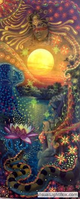

25 Царица-солнце
Хочешь света - стань солнцем, хочешь воздуха - стань ветром, хочешь воды - будь дождем... свети, кружись, сгорай, ЖИВИ!!!
Я сидела у окна, в котором сияло солнце и начала медитацию. Через некоторое время я почувствовала, что погружаюсь, что ухожу... я чувствовала качели, которые уносят меня прочь. Во время этой медитации произошло маленькое чародейство.
В какой-то момент ко мне пришла "царица-солнце", так я назвала это существо. От него лился солнечный свет, я составила руки ковшом и зачерпнула этот свет. Затем опрокинула на себя и увидела, как вокруг меня начало разливаться удивительное солнечное сияние. Кончики волос наэлетрилизовались и казались покрытыми золотом и бронзой в ярком солнечном потоке. Я смотрела на мир, прищуриваясь и мир от ресниц становился ярко-радужным. Затем словно мы перенеслись в райский сад, где я оказалась в заводи, пахнущей терпкой хвоей, от которой шел такой свет, как от жидкого солнца. Так я искупалась в солнце... это было более чем потрясающе... это была какая-то квинтэссенция вдохновения и идейности. Вокруг в заводи росли леопардовые пятнистые лотосы из которых тоже исходило белое сияние, а от воды поднимались стрекозы самых причудливых расцветок. Мы так ждали солнце и мы его дождались!!
Воистину... мы переместились в Дом Восходящего Солнца
Это потрясающее, сногсшибательное чувство... выливать жидкое солнце из ковша на себя, видеть, как тебя пронизывают яркие нити, знать, что теперь оно стало частью тебя и ты сам можешь светиться, быть солнцем.
А потом дремать в солнечной ванне... все лишнее уходит... ты сияющий и легкий.. и ты все понимаешь
Все и вся... вдруг весь мир как дивный свиток разворачивается у тебя на ладони
Узор хитрых замыслов, чью изнанку ты наблюдал раньше, открывается тебе лицевой стороной и ты видишь всю его целостность. А если хочешь - можешь приблизиться и скользить по солнечным нитям
Я все еще живу с чувством этого солнца. Чувствую, что сижу и улыбаюсь, словно кошка, греющаяся в его лучах, довольная, мурлычущая
Это чудо, квинтэссенция настоящего жидкого солнца, в тот момент, когда оно только рождается, словно терпкий, но в то же время еще пронзительный мед, который только достали из сот?
Есть такие эмоции на свете, которые стоит пережить... и одна из них - это когда царица-солнце спускается к тебе и дарит тебе СОЛНЕЧНОСТЬ...
Сначала мы слушали музыку с шаманского ритуала, потом она потихоньку начала отслаиваться от источника, мы ее выключили, но она все равно уже жила в воздухе, обрела консистенцию и цвет... она плелалась новыми и новыми солнечными нитями.. она ЖИЛА
Эти нити струились вокруг нас в толще плотного воздуха, можно было поймать любую за хвост и раскрутить словно клубок...
Хватаешь светящийся клубок, раскручиваешь его, а он тебя уносит по спирали и ты уходишь на глубину... а потом то ли через секунду или через вечность выныриваешь и находишь себя рассказывающим какие-то основопологающие законы этого мира в виде образов
Это не то, что здорово.. это божественно чудесно... и оно того стоит!
Оно далеко и близко... далеко как секунда длинною в вечность. как миллиарды миль от земли до солнца в протягивании руки.
Был еще один интересный момент. Удалось зацепить несколько впечатлений, которые давным-давно забыла, которые у меня возникли сразу после рождения, когда-то тогда очень давно. И вдруг мне стало понятно, почему люди, живущие в одинаковых условиях могут быть такими разными... что на самом деле на нашу систему вкусов, восприятия мира в огромнейшей степени влияют те первые впечатления. причем чем ближе они к началу, тем сильнее они влияют. Иногда один яркий отблеск на стекле, который ты увидишь в первые моменты жизни, может повлиять на все твое восприятия мира в дальнейшем...В те моменты все пропускается через тысячекратную призму. Зато проливается свет на некоторые вещи... вроде как на систему ценностей.. то, что тебе казалось просто измышлением, плодом ума, чисто умозрительным, лично твоим... иногда является лишь отголоском ТОГО, что вдруг ты зацепил.. или вернее, тебя зацепило... иногда, чтобы понять какое-то свое укоренившееся качество, можно вернуться в тот далекий момент жизни... и перезаписать его! И будешь наблюдать великолепный эффект бабочки. Это странно... за секунду словно проживаешь параллельную жизнь, через которой одной из главных нитей не прошло ЭТО. В тот момент я это увидела очень живо картинкой из конусов - источников света белых и черных. Верх картинки - начальный момент жизни, рождение - зеленая черта - срез - СЕЙЧАС. Чем ближе конусы находятся к началу, тем больше площадь конуса на зеленой линии - тем большее воздействие та эмоция оказывает... иногда оно все так переплетено - светлые и темные конусы и кажется, запутано, неразделимо... его не надо разделять здесь... чтобы решить проблему, убрать черный источник - надо подняться туда, где он начинается
Солнце... это стоит пережить... главное не потерять его потом за суетой, не позволить ему погибнуть, завязнуть в болоте всего и вся, сохранить чистым и первозданным, поскольку ощущение солнца, жизнь света - это одно из самых чистых ощущений...
и оно НАСТОЯЩЕЕ.. это не суррогат, не важно, что явилось его причиной, это все остается где-то не здесь, в далеком КОГДА-ТО, остается лишь результат... и ты пытаешься его сохранить, вынести из того сна, именуемого реальностью.
Солнце... оно не суррогат.. оно настоящее! Пока ты жив - оно будет тебе светить
оно настолько же настоящее, как твоя душа, ибо если у человека изъять все, казалось бы, иллюзорное, бредовое... останется один компьютер, не совершающий ошибок.
Иногда ведь это так необходимо - повысить чувствительность донельзя, до самой последней волосинки на коже, которая как антенка впитывает солнце, исцарапаться о тернии, а потом купаться в ванне золотой звезды, когда уже ничего не остается... когда уже тернии превращают одежду в лохмотья, ты теряешь покой и сон, теряешь нормальную жизнь... в тот момент ты видишь солнце дико, непонятно... пройти всю Зону, потерять в ней Жизнь, но дойти до золотого шара.. и тогда уже все - корысть, злость, все пропадает, стирается, все мысли уже запутываются, увязают в болоте, тонут где-то в камариной плеши... и остается одно.. СЧАСТЬЕ ВСЕМ! И ПУСТЬ НИКТО НЕ УЙДЕТ ОБИЖЕННЫМ.
Кажется - еще момент - ты упадешь и будешь молиться этому солнцу, плакать всеми дождями, ливнями, когда тебе невероятно стыдно за то, что ты шутил, смеялся над этим, смешивал его с болотной тиной и выпивал запом этот коктейль... то, что на деле почти свято, но теперь ты сам переплел его с болотными водорослями... и как теперь отделить... а переплел, поскольку это было так просто.. поскольку тебе все говорили, что это лишь болото, и ты в какие-то секунды в это поверил, поскольку ты в этом всегда был один... без чьей-либо подсказки шел по этому шаткому пути.. между сциллой и харибдой
и в душе ужасно противно то, что из-за тебя кто-то переживает, кто тебя любит, считает, что ты ведешь какую-то очень странную жизнь... может, они и правы.. но так хочется, чтобы они тоже были счастливы... вынести для них кусочек этого солнца. И тогда они поймут. И не уйдут обиженными
Сволочь она, эта Зона-матушка.. всего тебя стремиться поглотить, даже мысли твои - и те смакует, коварная... выдумывает тебе все новые ловушки, хохочет над тобой тысячью ртами
а когда наиграется, когда у тебя больше нет сил, ты то ли живой, то ли в никогда... когда уже высохли дожди и слезы и ты не можешь плакать... когда ты обжегся, обжег те крылья наваждения и упал на дно в колодец, тогда оно показывает тебе свет открыает тебе твое СОЛНЦЕ, а когда оно не случается, и вокруг все еще беспросветная тьма... у тебя просто нет выбора... ты сам зажигаешь внутри свое солнце. Ты сам создаешь свой свет... и создаешь из болотной тины, из того, что вокруг, поскольку его больше не из чего создать... и строишь лестницу в небо... чтобы тому, кому еще когда-нибудь вздумается кидать лассо в облака, было за что зацепиться
Да-да... если хочешь идти выше, если умеешь летать - однажды сталкиваешься с тем, что тебе не за что зацепиться
что живем мы, если чуть взлететь над землей, как плесень, как колония паразитов, в двумерном пространстве стелимся... а чуть оторваться... и вокруг лишь пустота... и там кончается наша паутина и рутина... и там уже нет прочной почвы и если ты не легок, то взлетев, ты падаешь и разбиваешься... А быть легким так нелегко... когда тебя твои сомнения, страхи, желание легкого, привычного, тянет камнем на дно
Оно так, черт возьми, хотя до глубины души до чертиков жалко, что летающий одинок... но ведь я нашла НАСТОЯЩЕЕ... пусть сложным путем, но нашла именно НАСТОЯЩЕЕ, а не суррогат, и нашла в СЕБЕ и в КОСМОСЕ вокруг себя солнце... море любви! черт возьми, я поняла, что умею любить и плакать, и радоваться - значит, я ЖИВА!